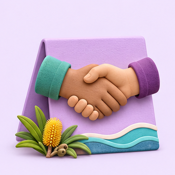

Local businesses, community groups and people
See what taking part feels like.
Try a sample lesson, explore ways to help build Ready SETCO, or tell us what you’d like to learn, do or share on Straddie.

How to get involved
Ready SETCO is still forming. Local businesses, clubs and community leaders can help lay the foundations. Work and training enquiries are welcome from locals and backpackers alike.
Look around
Try a lesson or see what we’re planning for training and work and events.
Tell us what interests you
Share a skill, ask about an activity, or put your hand up to help form the cooperative.
Talk through a next step
Luke Hayes follows up privately. Membership, paid work and course places are agreed separately.
Open preview
Your first volunteer shift
Try this short sample about helping at a fictional community event. Anyone can give it a go. Your answers stay on this page.
Meet your shift lead
You’ve arrived to help at an outdoor community film screening. Check in with the person running your shift, ask where you’ll be working and find out who to go to if anything changes.
What to ask at the welcome desk
- Who’s leading my shift?
- Where should I start, and what’s my task?
- Who do I tell if I need help or spot a problem?
What would you do first?
You arrive early and see boxes of equipment beside the screen.
Tell us what you’d like to do
Choose what interests you so Luke knows where to start. Once your enquiry is received, you'll see a reference and can download a copy.